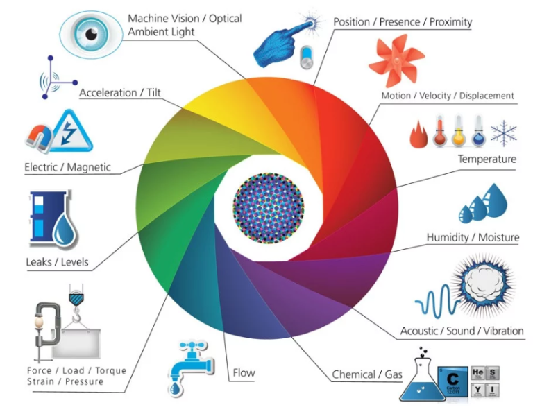

Principais Tecnologias

Drones
Usados para mapeamento, pulverização e monitoramento de lavouras.

IoT e Sensores
Monitoram dados de solo, clima e produtividade em tempo real.
Inteligência Artificial
Analisa dados para prever safras e otimizar decisões agrícolas.